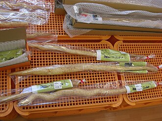

やまのいも（山芋）の生産量
いちばん多くとれる都道府県
やまのいもが日本でいちばん多くとれるのは北海道です。7万900 tで、全国（14万8,400 t）の48%を占めます。

| 順位 | 都道府県 | 収穫量 | 全国に占める割合 |
|---|---|---|---|
| 1位 | 北海道 | 7万900 t | 48% |
| 2位 | 青森県 | 4万4,700 t | 30% |
| 3位 | 長野県 | 6,430 t | 4.3% |
この数字について
- 分類：ヤマノイモ科
- 全国の収穫量：14万8,400 t
- この数字が表すもの：収穫量（畑や田でとれた重さ）
- 調査：作物統計調査 作況調査（野菜） 令和6年産
- 10県分を調査（調査していない県は順位に入りません）